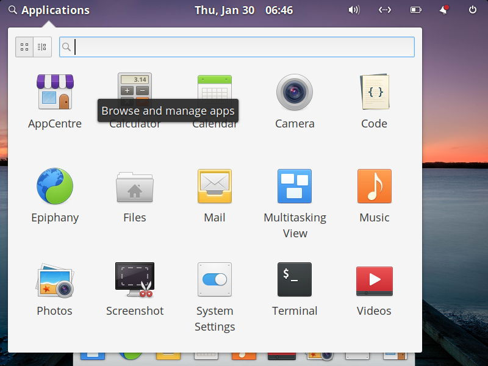

How to Use AppCentre
AppCenter allows you to install and manage software for your elementaryOS system.
How to Open AppCentre:
AppCentre's Home allows you to browse categories of software and search for software.
How to browse Categories for software:
How to search AppCentre for software:
NOTE: Many Curated Applications have pay-what-you-want pricing. You may opt out of supporting developers by selecting "$0".
Congratulations, you have installed your first piece of free software!
How to Open AppCentre:
- Click on the Application Drawer in the top left corner of your display. 
- Click on AppCentre.
AppCentre's Home allows you to browse categories of software and search for software.
How to browse Categories for software:
- Scroll down the Home panel to see different categories of software.
- Click on a category of software.

NOTE: Applications at the top of a Category are Curated Applications. Applications below the "Non-Curated Apps" do not conform to the HIG of elementary OS. They may not function as expected but can be installed.

How to search AppCentre for software:
- Click the text field in the top right of AppCentre's Home.
- Type a keyword to search AppCentre.

- Click on a software you want to install.
- On details page click the Free button on the top right

NOTE: Many Curated Applications have pay-what-you-want pricing. You may opt out of supporting developers by selecting "$0".
Congratulations, you have installed your first piece of free software!